Voici une sélection de 88 ouvrages concernant de près ou de loin Concorde :
Les beaux livres :
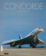 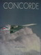 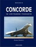 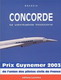 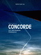 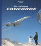 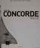
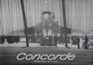 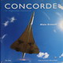 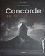 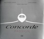 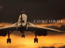
Les livres techniques :
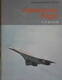 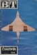 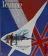 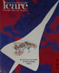 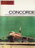 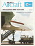 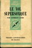 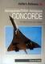  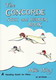 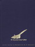
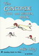 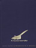
Les livres sur la naissance de Concorde :
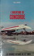 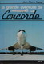 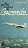 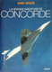 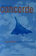 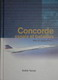 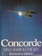 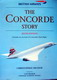 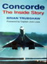 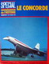 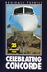 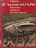 
Les controverses politiques autour de Concorde :
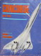 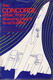 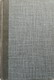 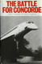 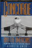 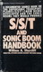 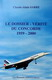
Les autres avions ayant entourés Concorde :
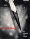 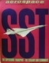 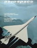 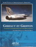 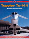 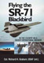 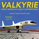
Les autres ouvrages dédiés à Concorde :
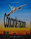 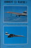